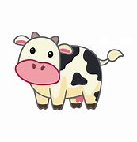
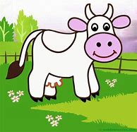

PARRAFOS

Ustedes conocen esa canción de las vacas que dan leche con
chocolate y leche condensada. Bueno, hay muchos cientÃficos
que han quedado traumados desde niños intentando lograr esto,
hasta que llegó Hans Fritz Chucrut para solucionar este problema.
“Solucionarâ€, esa era su idea.

profesor Chucrut investigó el tema durante muchos años,
mientras destacaba por otros inventos. Alimentó a una vaca
solo con chocolate, pero no dio resultado y quedó súper acelerada
la pobre. A otra le dio kilos de azúcar, pero solo le salieron caries.
A otra la llenó de manjar hasta que se volvió vegetariana de puro odio al manjar.
“¿Será algo de la mente?â€, pensó el inventor​
Menu Practicas
MARCO ANTONIO CORRALES GONZALEZ